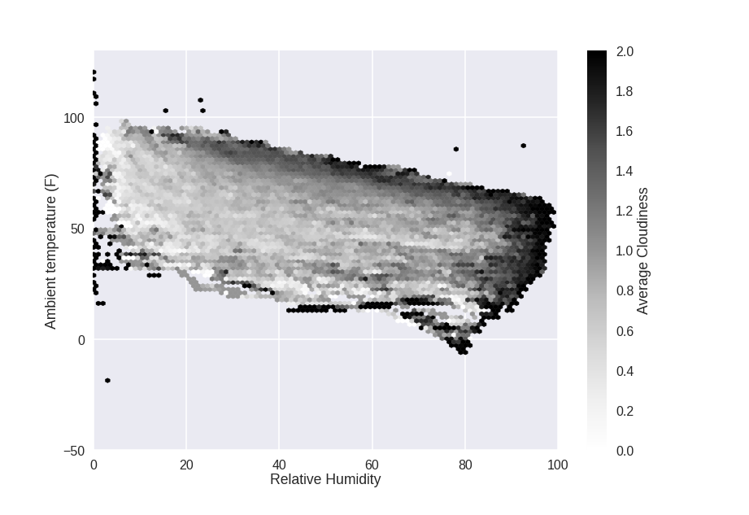
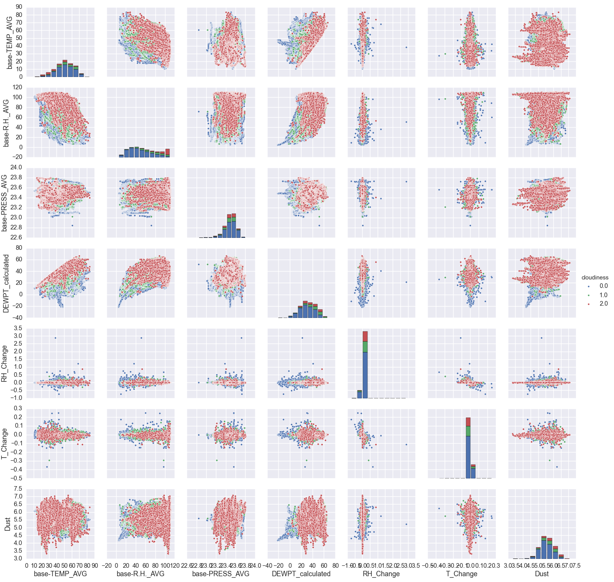
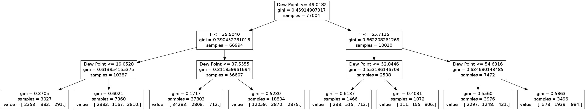
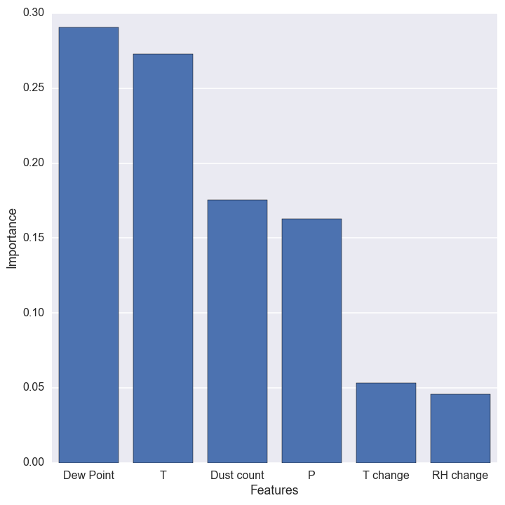
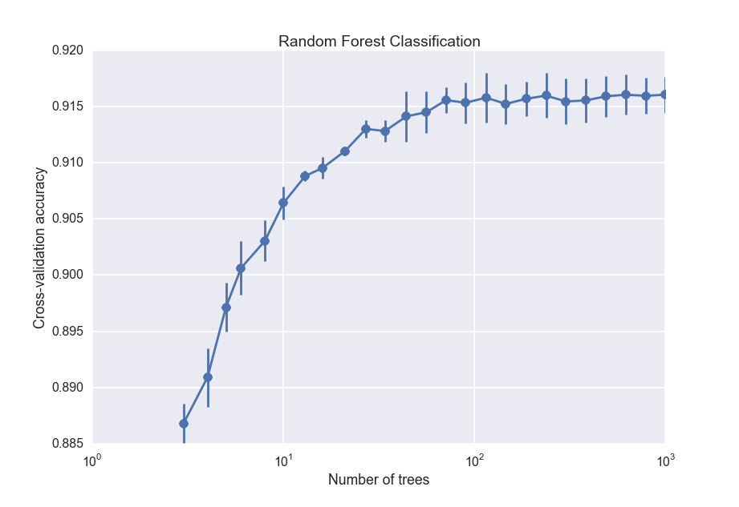
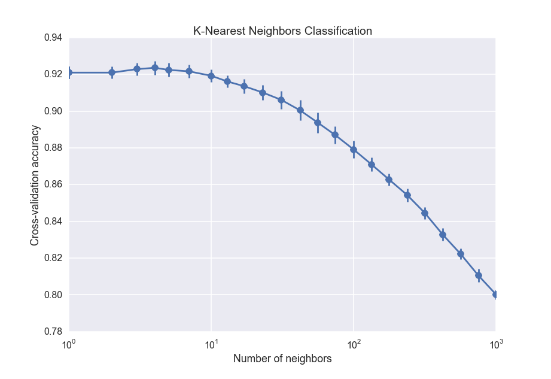
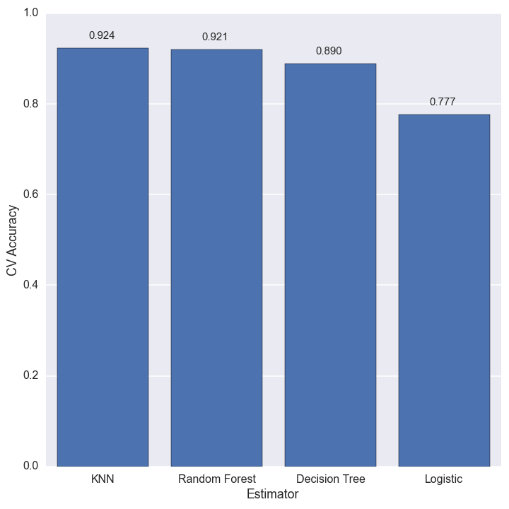

One of the main branches of machine learning is classification, where you put data points in two or more groups based on whatever information you have. In this post, I will be using classification for something I have experienced much more than I would like: night-time cloud cover over McDonald Observatory. I am doing this both to learn about the various algorithms available for classification problems, and to prepare some data for a later blog post quantifying observer luck at McDonald Observatory.
Now, let's get to it! What data do we have? Well, the observatory has a weather archive that has quite a bit of information on either 1- or 5-minute intervals. For this project, I will be using the basic weather information, which includes the temperature, pressure, humidity, dew point, and dust counts, as well as the cloud sensor data. Wait, if we have a cloud sensor, why do I need to do any kind of classification you ask? Well, there are long stretches of missing data with the cloud sensor that I want to fill in using the basic data.
Before we go on, a quick primer on how the cloud sensor works. What the sensor is actually doing is measuring both the "sky temperature" and the ambient temperature. The sky temperature is measured in the mid-infrared, and I imagine is being fit more or less to a blackbody curve. Without clouds, this temperature will be very cold. However, clouds will reflect some of the mid-infrared radiation coming from the Earth itself, and will cause the cloud sensor to measure a warmer sky temperature. The ambient temperature is measured in some much simpler way, since it is just getting the temperature wherever the sensor is physically located. So, a large difference between the sky and ambient temperatures indicates that the sky is clear, while a smaller difference means the sky is cloudy. The suggested values from the weather site are:
- \(\Delta T < -54\): Clear
- \(-54 < \Delta T < -18\): Partly cloudy
- \(\Delta T > -18\): Very cloudy
So now I have the three classes to use in classification: Clear, partly cloudy, and very cloudy. Let's take a look at the data. For brevity, I will not show every python command that I used to do this analysis; if you want, the ipython notebook with a bit less explanation but all of the code is available here. The first thing I do is read in the data files using pandas.
cloud_data = pd.read_csv('data/clouds.dat', na_values='+-.----E+--', parse_dates={"Date": [1,2]})
basic_data = pd.read_csv('data/basic_weather.dat', na_values='+-.----E+--', parse_dates={"Date": [1,2]})
basic_data.index = basic_data.Date
cloud_data.index = cloud_data.Date
The first two lines are reading in the actual data, while the second two are setting the index to be a datetime object instead of just an integer. Now, the basic data has a good amount of missing data, but it is generally short enough timespans that we can fill in the missing data through interpolation or re-calculation. The dew point is missing much more often than anything else, but is easily calculable from the temperature, pressure, and relative humidity. I just make a new column with the calculated dew point with the following code:
T = (basic_data['base-TEMP_AVG'] - 32.0)*5.0/9.0 + 273
Es = np.exp(5423*(1.0/273. - 1.0/T))
Td = (1./273. - (1./5423.)*np.log(basic_data['base-R.H._AVG']*Es/100.))**-1
basic_data['DEWPT_calculated'] = (Td - 273.)*(9./5.) + 32
The first and last lines are conversions from Fahrenheit to Kelvin and back, while the middle two lines are doing the actual dew point calculation. I am not quite done with the basic data because it still has a few times that are missing more than just the dew point. Here is where I use the datetime index for the first time, and use the built-in pandas interpolate function to do a linear interpolation in time:
basic_data.interpolate(method='time', inplace=True)
Now that I have filled in the missing basic weather data, I move on to the cloud sensor data. This is the hard part, because it has day- to week-long time spans where the sensor was not working for some reason. Anyone who has looked up knows that the number of clouds in the sky can change on much faster timescales than that, so interpolating is not going to be a very good way to go. The first thing I do is add the class labels to the data.
def get_cloudiness(Tdiff):
if Tdiff < -54:
return 0
elif -18 > Tdiff >= -54:
return 1
else:
return 2
cloud_data['cloudiness'] = cloud_data['cloud-Sky-ambient'].map(get_cloudiness)
Exploratory Data Analysis
Now that I have the data loaded up, let's take a look at it. The first thing to do is plot the temperature, relative humidity, and cloud cover class from the cloud sensor data: 
The heaviest cloud cover tends to happen at the extremes of the plot: high temperature, high humidity. That makes sense: higher temperatures mean more water vaper can be in the air, and higher humidity means more water vapor is in the air. Both will make clouds.
Now, I will combine the basic data with the cloud data to get a much more in-depth view. This is again a single line of python code. Since both have datetime values as their index, the merge is done based on the time of measurement.
merged = pd.merge(basic_data, cloud_data, how='left')
Now, I did a little bit of research and apparently clouds are more likely to form if the temperature and humidity are highly variable throughout the atmosphere 1. I don't have access to spatial variability, but I do have temporal variability of those quantities so I will make a couple more columns with the time derivative of the relative humidity and temperature:
merged['RH_Change'] = merged['base-R.H._AVG'].pct_change(periods=1, limit=2)
merged['T_Change'] = merged['base-TEMP_AVG'].pct_change(periods=1, limit=2)
I will also combine the dust sensor data and use the log since it has a very large dynamic range
merged['Dust'] = np.log10(merged['base-DUST1_CRNT'] + merged['base-DUST2_CRNT'])
Now, I use seaborn to plot the relationship of every variable to each other at once. For those with a sharp eye, I am only considering night-time data (when the 'daylight' row is less than 1 million).
sns.pairplot(merged.loc[(merged['cloud-Daylight'] < 1e6)], dropna=True, hue='cloudiness', vars=['base-TEMP_AVG', 'base-R.H._AVG', 'base-PRESS_AVG', 'DEWPT_calculated', 'RH_Change', 'T_Change', 'Dust'])

There is a lot of information in this plot. The red points are where it is very cloudy, and the blue points are clear. Let's step through a bit by variable and try to summarize.
- Lower temperatures and higher humidities correlate with cloudier weather. That is pretty expected.
- Pressure: There doesn't seem to be much here. It does appear that more extreme pressures (either low or high) correlate with clearer nights. I'm not sure why that would be.
- Dew point: This is basically the same information as humidity and pressure, but does seem to have somewhat cleaner boundaries.
- Change in humidity and temperature: This doesn't really show much information. It sort of looks like the higher cloud levels occur when the humidity/temperature are changing more slowly. However, this is just an effect of there being more clear nights that cloudy nights. The standard deviation of the different groups is basically the same.
- Dust level: This is the sum of the small (\(0.3 \mu m\)) and large (\(1 \mu m\)) dust grains. It also doesn't seem to show much, but I know that clouds need dust in the air to form so I will keep it as a variable.
Classification Algorithms
To estimate cloud cover from the variables listed in the plot above, I will try a few different algorithms. To compare the different algorithms, I will split up the data into a "training set" and a "testing set". I will train each algorithm on the training set, and then see how well it predicts the right answer on the testing set. This is just cross-validation. Now, which algorithms will I use?
Logistic regression:
Logistic regression is easiest to understand when there are only two classes instead of the three we have here. Then, it is similar to polynomial regression in that you are fitting an equation of the form
\( t = c_0 + c_1x_1 + c_2x_2 + ...\)
to the data (x), but then taking the extra step of turning t into a probability of being in 'class 1' with the logistic function:
\( f(t) = \frac{1}{1+e^{-t}}\)
Thus, you fit the parameters \(c_0, c_1, ...\), and evaluate the parameters by comparing the value of f(t) to what class the data point is in. The optimized parameters then have the properties:
- points in class 1: f(t) > 0.5 (or some threshold you can play with if you want)
- points in class 0: f(t) < 0.5
To use the logistic function to predict the class, you just plug your data points in to get t, and then use the logistic function to get the probability of being in class 1.
How do we use this for the problem here, where there are three classes? The simplest way is the 'one vs. all' classifier. Basically, you fit three sets of parameters \(c_0, c_1, ...\) and each set corresponds to one of the classes. In our setup, you would do normal logistic regression for:
- clear vs. partly cloudy or very cloudy
- partly cloudy vs. clear or very cloudy
- very cloudy vs. clear or partly cloudy.
Then when you want to predict which class a new data point has (how cloudy is it), you find the probabilities of each class and take the one with the highest probability as the predicted class.
I will be using the LogisticRegression class in scikit-learn to do the actual work of fitting the data. This class uses a regularization parameter (C), which is basically just a way to keep the parameters \(c_0, c_1, ...\) small and prevents over-fitting. The value to use for regularization depends on the specific data you are using, and so we again use cross-validation to choose it. In this case, there is a LogisticRegressionCV class that does all of that for you so I don't even need to do much of anything special.
Decision Tree
A decision tree is basically just a flowchart that leads to the classification labels (in our case clear, partly cloudy, and very cloudy). Or, in programmer-speak, it is a long chain of if-then-else decision rules. An example assessing how likely a person was to have survived the Titanic is shown below.

Fitting a decision tree from data is done by splitting each input variable (temperature, pressure, etc) at some value. The number of branches and numerical value of the splits are adjusted until each "leaf" only contains points from one class.
The chief advantage of a decision tree is that it is very easy to interpret. For example, it is really easy to see from the above tree that the best way to survive the Titanic was to either be a woman or a young boy without many siblings. For this reason, decision trees are popular machine learning tools to provide actionable results.
I will again be using scikit-learn for the decision tree classifier. The full decision tree has far too many levels to display in a blog post, but here is a version with only three levels.

We immediately see that the tree picks out a couple things (which we already know):
- Clear nights occur when the temperature is high and the dew points are low (third leaf)
- Cloudy nights occur when the temperature is low and the dew point is high (sixth leaf)
- The most important variables are temperature and dew point (since nothing else appears in this truncated tree).
When I run the full tree, it ends up with 31 levels. The importance of each variable is shown below:

Temperature and dew point are still the most important variables, but now the dust count and pressure show up as important too. The time derivative of temperature and relative humidity are not very useful predictors, so we will not use them for any of the final predictors. The overall cross-validation accuracy even increases a bit when we drop these variables!
Random Forest Classifier
A random forest is an improvement upon a decision tree. Basically, a bunch of decision trees are all trained at once with random subsamples of the data. To make a prediction, the data is sent through each tree and the total probability is calculated from the ensemble. As you add more trees to the "forest," the result gets more accurate but is also more prone to over-fitting and becomes more computationally expensive.
We will cross-validate to find the best number of trees. There is no built-in class for easily cross-validating the number of trees in the forest, but scikit-learn does provide a very useful cross-validation module. The key code to do the cross-validation is shown here:
# Cross-validate a random forest classifier with 3-1000 trees
N = np.logspace(0.5, 3, 25, dtype=np.int)
scores_arr = []
err_arr = []
for i, n in enumerate(N):
clf = RandomForestClassifier(n_estimators=n, n_jobs=2)
scores = cross_validation.cross_val_score(clf, X_train, y_train, cv=3)
scores_arr.append(np.mean(scores))
err_arr.append(np.std(scores))
The cross_val_score function takes the classifier and the data, and does 3 independent cross-validation trials for each number of trees. I then save the average and standard deviation of the scores and plot them:

So the accuracy increases with the number of trees, but begins leveling off after about 100 trees. For the final random forest classifier, I will use 100 trees.
K-nearest neighbors
The K-nearest neighbors algorithm is pretty easy to understand: to classify a new data point, you just take several of the points with known labels closest to it, and do a majority vote. If most of the points near the data point are cloudy, for instance, then the new data point will be classified as cloudy. Unlike the other algorithms, K nearest neighbors does not build up any kind of global model that gets applied to the data. Instead, it just uses the training data itself. As with the random forest classifier, we will use cross-validation to choose the 'best' number of neighbors:

The drop off towards large number of neighbors is the effect of increasing bias, which is the opposite of overfitting. It is equivalent to fitting a straight line through data when you should fit a quadratic function. The best number of nearest neighbors is about 5, which is actually surprisingly small.
Finding the best estimator.
We are finally in a position to estimate the cloud cover for the missing values. The figure below shows the cross-validation accuracy of each estimator.

The best estimator for this dataset is k-nearest neighbors, with the random forest close on its heels. The best we can do is about 92% accuracy, but that is good enough for my purposes.
All that is left now is to fill in the missing values in the cloud data with the k-nearest neighbors estimation.
# Get the predicted cloudiness
X_df = data[['base-TEMP_AVG', 'base-PRESS_AVG', 'DEWPT_calculated', 'Dust']]
X_norm = scale_fcn.transform(X_df.values)
cloudiness_arr = clf.predict(X_norm)
cloudiness = pd.Series(data=cloudiness_arr, index=X_df.index)
# Fill in the missing values
idx = data.index[data.cloudiness.isnull()]
data.loc[idx, 'cloudiness'] = cloudiness.ix[idx]
Test my results!
Are you at McDonald now? Try out my results. Ideally, I would like to have a web interface, but I'm pretty sure that would require a lot more work to make a dynamic website with django or something. In lieu of that, you can use this ipython notebook, along with a pickled version of the classifier and scaler!
- ipython notebook
- Pickled classifier (OS-dependent, I think. Right click and save as a file to download):